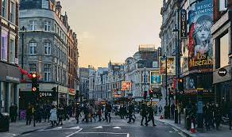
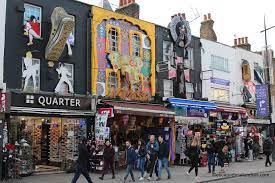
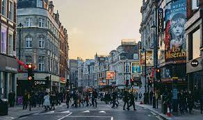
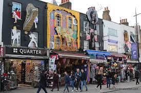
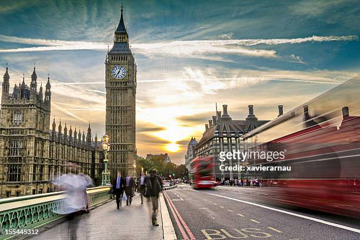
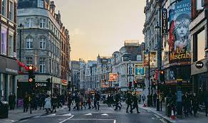
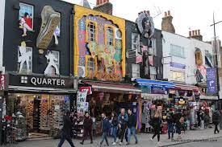
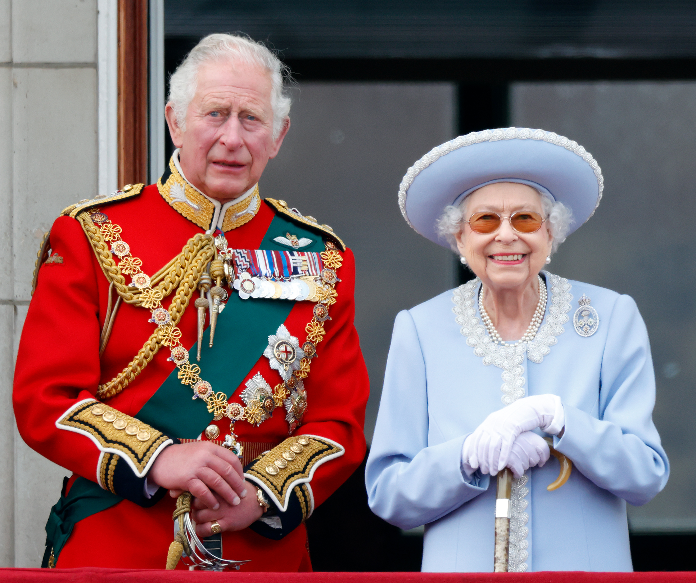
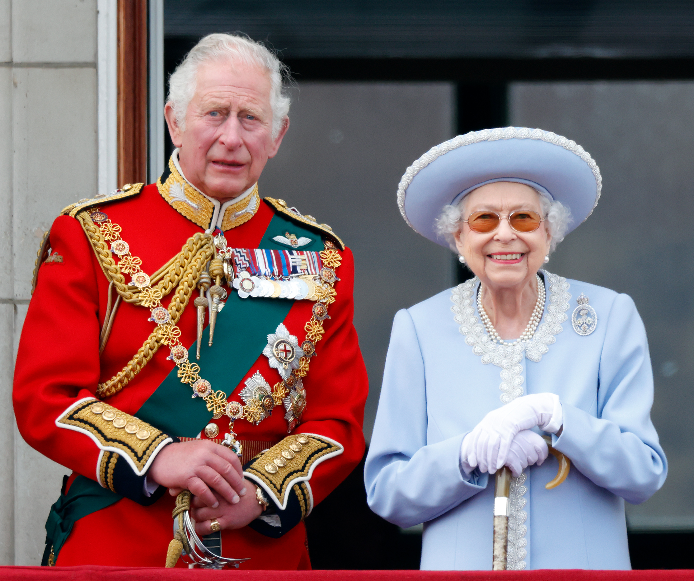

Culture
Experience the vibrant culture of London through its museums, theaters, and diverse neighborhoods.
 



London is the capital of England and the United Kingdom. An immense metropolis located at the north-west end of the European megalopolis of which it constitutes an essential link, as well as on the major axis of the ridge of the same name. Thus, it is at the heart of the most developed and richest region in Europe. It is also a center of international momentum perfectly integrated into the phenomenon of globalization.
London is a vibrant and diverse city located in the United Kingdom, renowned for its rich history, cultural significance, and bustling atmosphere. Here's a description of London in English: London, the capital city of the United Kingdom, is a melting pot of cultures, offering a dynamic blend of old-world charm and modern sophistication. Steeped in history dating back to Roman times, London boasts iconic landmarks such as the Tower of London, Buckingham Palace, and the Houses of Parliament, which stand as testaments to its illustrious past. The city's diverse neighborhoods each possess their own distinct character, from the trendy streets of Shoreditch to the elegant squares of Kensington. Visitors can explore world-class museums like the British Museum and Tate Modern, or wander through bustling markets like Camden Market and Borough Market, sampling an array of international cuisines along the way. London's vibrant arts scene is evident in its numerous theaters, galleries, and music venues, where visitors can catch everything from West End musicals to underground gigs. The city also offers lush green spaces such as Hyde Park and Regent's Park, providing a welcome escape from the urban hustle and bustle. Transportation in London is efficient and extensive, with the iconic red double-decker buses and the famous London Underground connecting every corner of the city. Whether you're strolling along the banks of the River Thames, admiring the skyline from atop the London Eye, or enjoying a pint in a traditional pub, London never fails to captivate with its energy and charm..
Experience the vibrant culture of London through its museums, theaters, and diverse neighborhoods.


London's history is rich and fascinating, dating back to Roman times. Founded by the Romans around 50 AD, London was then known as Londinium. It quickly became a vital commercial and administrative center for the Roman Empire, with roads connecting the city to other parts of Great Britain. Over the following centuries, London experienced ups and downs, including the Anglo-Saxon invasion in the 5th century, the Norman Conquest in 1066, and the Black Death in the 14th century. However, it always remained an important center of trade and power. In the 16th and 17th centuries, London became one of Europe's most significant cities, thriving on global trade and becoming the heart of the English Renaissance. The city also witnessed major events such as the Great Fire of 1666, which devastated much of the city, leading to its subsequent reconstruction. During the Victorian era, London became the center of the British Empire, with rapid urban expansion and the construction of many iconic landmarks such as Tower Bridge and the Crystal Palace. The city also served as the birthplace of the Industrial Revolution, with significant advancements in areas such as transportation, technology, and engineering. In the 20th century, London survived two world wars, enduring significant damage during the bombings of World War II. After the war, the city was rebuilt and continued to thrive as a global financial, cultural, and tourist hub. Today, London remains one of the world's most dynamic and diverse cities, with a cosmopolitan population, a thriving arts scene, renowned institutions, and ongoing global influence. Its captivating history is reflected in its iconic landmarks and eclectic neighborhoods, making London a must-visit destination for travelers worldwide.
 
